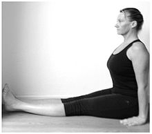
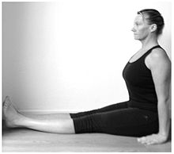

left-right symmetric
https://en.wikipedia.org/wiki/Baddha_Konasana

source: Yoga Journal
staff pose OR back stretch pose

source
| Current pose: butterfly OR cobbler | Adjacent poses: staff pose OR back stretch pose | |
|
Baddha Konasana left-right symmetric https://en.wikipedia.org/wiki/Baddha_Konasana source: Yoga Journal |
staff pose OR back stretch pose  |